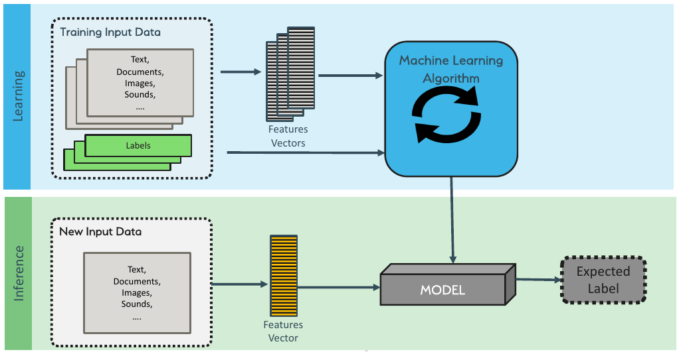
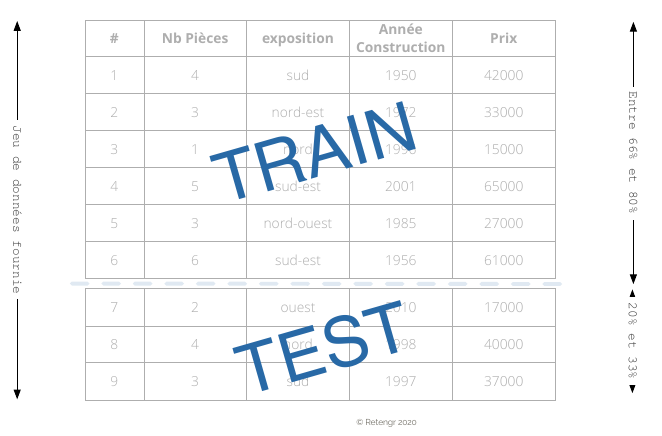

Le Machine Learning#
Le principe en une phrase#
Le Machine Learning, c’est donner des exemples à un algorithme pour qu’il apprenne à généraliser : c’est-à-dire qu’il soit capable de faire des prédictions correctes sur des données qu’il n’a jamais vues.
Quand vous apprenez à conduire, vous ne mémorisez pas chaque virage de chaque route. Vous apprenez des patterns (un virage serré = je freine, une ligne droite = je peux accélérer) que vous appliquez ensuite à n’importe quelle route. Le ML fait pareil avec les données.
Les deux ingrédients#
Pour faire du ML, il faut :
Des données : des exemples passés du problème qu’on veut résoudre
Un algorithme d’apprentissage : une méthode mathématique qui va chercher les patterns dans ces données
Le résultat de l’apprentissage, c’est un modèle : une représentation simplifiée de la réalité qui permet de faire des prédictions.
Exemple concret
Données : 891 passagers du Titanic avec leurs caractéristiques (classe, sexe, âge, tarif, port d’embarquement…) et s’ils ont survécu ou non
Algorithme : on en testera plusieurs (arbres de décision, Random Forest, Gradient Boosting…)
Modèle : un système capable de prédire la survie d’un passager à partir de ses caractéristiques
Les types d’apprentissage#
Apprentissage supervisé#
C’est le cas le plus courant en entreprise. On dispose de données étiquetées : pour chaque exemple, on connaît la réponse attendue.

L’algorithme apprend la relation entre les caractéristiques d’entrée (les features) et la réponse (le label ou target). Ensuite, on lui donne de nouvelles données sans label et il prédit la réponse.
Classification : prédire une catégorie#
On veut prédire à quelle classe appartient un élément.
Domaine |
Question |
Classes possibles |
|---|---|---|
Maritime |
Ce passager a-t-il survécu au naufrage ? |
Oui / Non |
Banque |
Ce client va-t-il rembourser son crédit ? |
Oui / Non |
Telecom |
Ce client va-t-il partir chez la concurrence ? |
Oui / Non |
Santé |
Quel type de tumeur ? |
Bénigne / Maligne |
Industrie |
Cette pompe est-elle en panne ? |
Fonctionnelle / À réparer / En panne |
Régression : prédire un nombre#
On veut prédire une valeur numérique continue.
Domaine |
Question |
Valeur prédite |
|---|---|---|
Immobilier |
Combien vaut cet appartement ? |
Prix en euros |
Energie |
Quelle consommation demain ? |
kWh |
Industrie |
Dans combien d’heures cette pièce va-t-elle casser ? |
Heures |
La frontière entre les deux#
Parfois la frontière est mince. « Ce passager a-t-il survécu ? » est une classification. Mais « combien de temps un passager a-t-il survécu dans l’eau avant d’être secouru ? » serait une régression. La façon dont vous posez la question détermine le type de problème.
Le split train/test : la règle d’or#
Un modèle qui a « appris par cœur » les données d’entraînement mais qui se plante sur de nouvelles données ne sert à rien. C’est comme un étudiant qui récite le cours par cœur mais qui n’arrive pas à résoudre un exercice différent.
Pour vérifier que le modèle généralise bien, on sépare les données en deux :
Un jeu d’entraînement (~70-80% des données) : le modèle apprend dessus
Un jeu de test (~20-30% des données) : on évalue le modèle dessus — des données qu’il n’a jamais vues

Point clé
On ne touche jamais au jeu de test pendant l’entraînement. Jamais. C’est la règle la plus importante du ML. Si on triche, on ne saura pas si notre modèle marche vraiment.
Apprentissage non supervisé#
Ici, pas de labels. On ne sait pas quelle est la « bonne réponse ». L’algorithme cherche des structures cachées dans les données.
Clustering : regrouper ce qui se ressemble#
L’algorithme forme des groupes (clusters) de données similaires, sans qu’on lui dise à l’avance quels groupes existent.
Exemples concrets :
Segmentation client : regrouper les clients par comportement d’achat pour adapter les offres commerciales
Détection de communautés : identifier des groupes d’utilisateurs sur un réseau social
Profils de passagers : regrouper les passagers d’un navire par profil socio-économique pourrait révéler des patterns qu’on n’avait pas imaginés
Détection d’anomalies#
Identifier les données qui « sortent du lot ».
Exemples concrets :
Fraude bancaire : repérer les transactions qui ne ressemblent pas au comportement habituel du client
Cybersécurité : détecter un trafic réseau anormal
Contrôle qualité : repérer les pièces défectueuses sur une ligne de production
Réduction de dimensions#
Quand on a trop de variables (50, 100, 1000 colonnes), certaines sont redondantes ou inutiles. La réduction de dimensions permet de garder l’essentiel en éliminant le bruit. On en reparlera quand on fera du feature engineering.
Apprentissage semi-supervisé#
Un cas intermédiaire très courant en entreprise : on a beaucoup de données mais peu d’étiquettes. Étiqueter les données coûte cher (il faut souvent un expert humain). Le semi-supervisé utilise les quelques données étiquetées pour propager les labels aux données non étiquetées.
Apprentissage par renforcement#
L’algorithme apprend par essai-erreur en interagissant avec un environnement. Il reçoit des récompenses quand il fait bien et des pénalités quand il fait mal. C’est comme ça qu’on entraîne des robots ou des IA de jeux vidéo. Ce n’est pas le focus de cette formation.
Quel type de ML pour quel problème ?#
Pour choisir, la première question est : est-ce que j’ai des labels ?
Situation |
Type d’apprentissage |
Exemple |
|---|---|---|
J’ai des données étiquetées et je veux prédire une catégorie |
Supervisé — classification |
Prédire si un client va résilier (oui/non) |
J’ai des données étiquetées et je veux prédire un nombre |
Supervisé — régression |
Estimer le prix d’un appartement |
Je n’ai pas de labels et je veux trouver des groupes |
Non supervisé — clustering |
Segmenter des clients par comportement |
Je n’ai pas de labels et je veux repérer des anomalies |
Non supervisé — détection d’anomalies |
Identifier des transactions frauduleuses |
Sur le terrain
80% des projets ML en entreprise sont du supervisé (classification ou régression). Avant de vous lancer, la première question à vous poser est : « est-ce que j’ai des données historiques avec la réponse que je veux prédire ? » Si oui, vous êtes dans le supervisé. Si non, réfléchissez à comment obtenir ces labels — c’est souvent la partie la plus longue et la plus coûteuse d’un projet ML.
Autre piège courant : on démarre un projet ML alors que le vrai problème c’est qu’on n’a pas de données, ou qu’elles sont inexploitables. Avant de parler d’algorithmes, assurez-vous d’avoir les données.